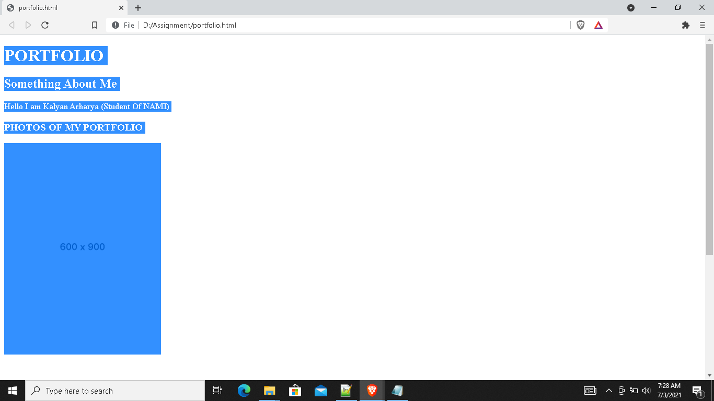
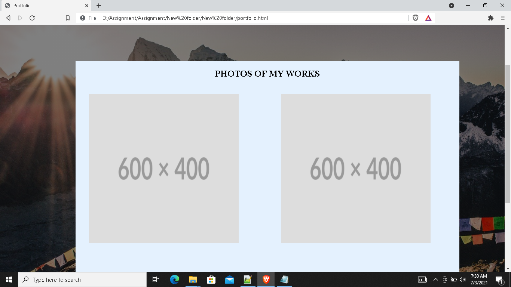
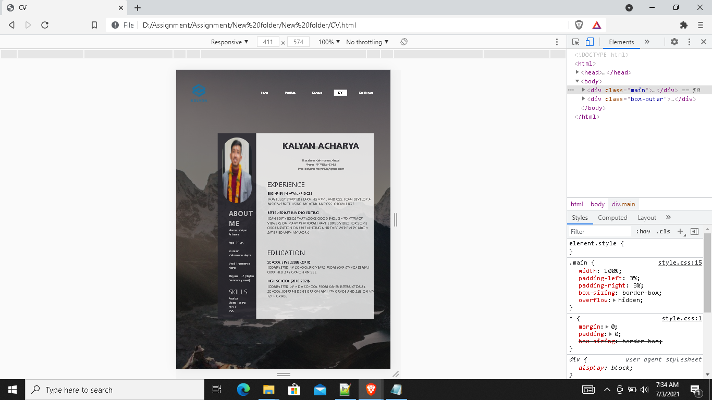
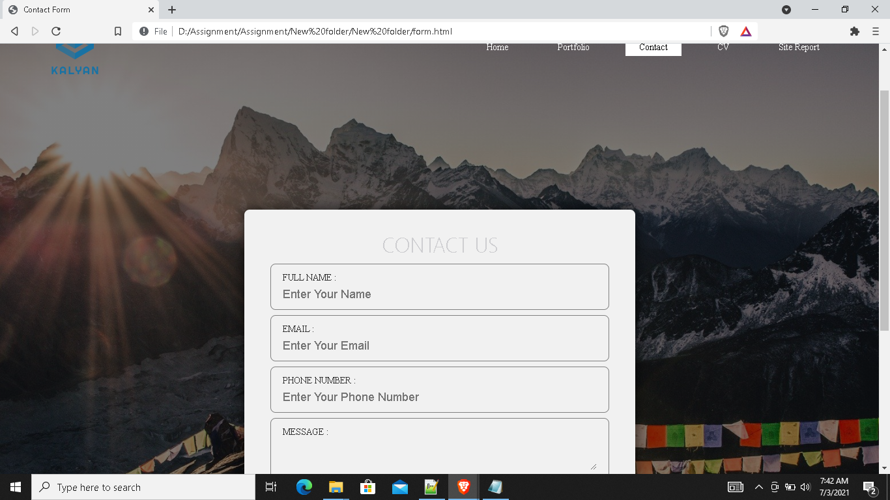
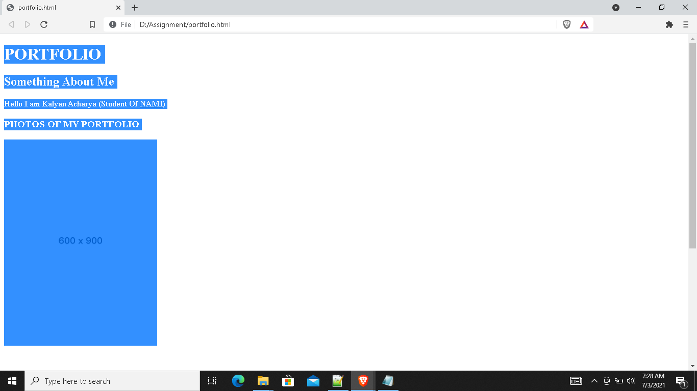
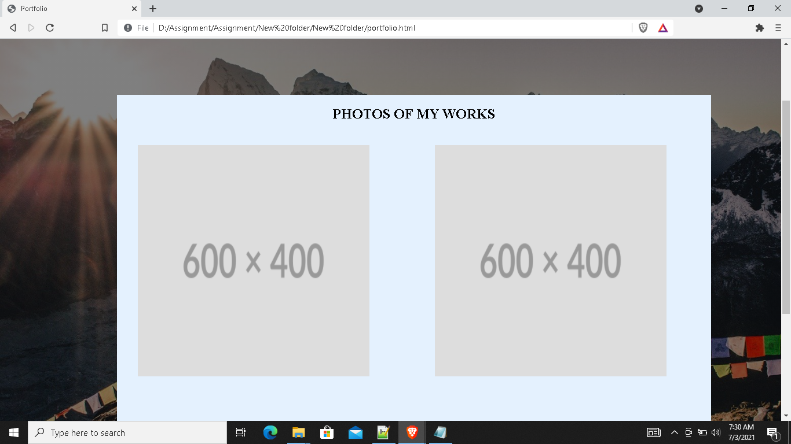
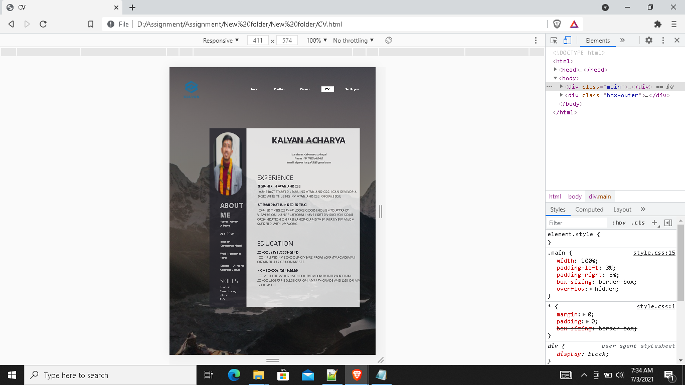
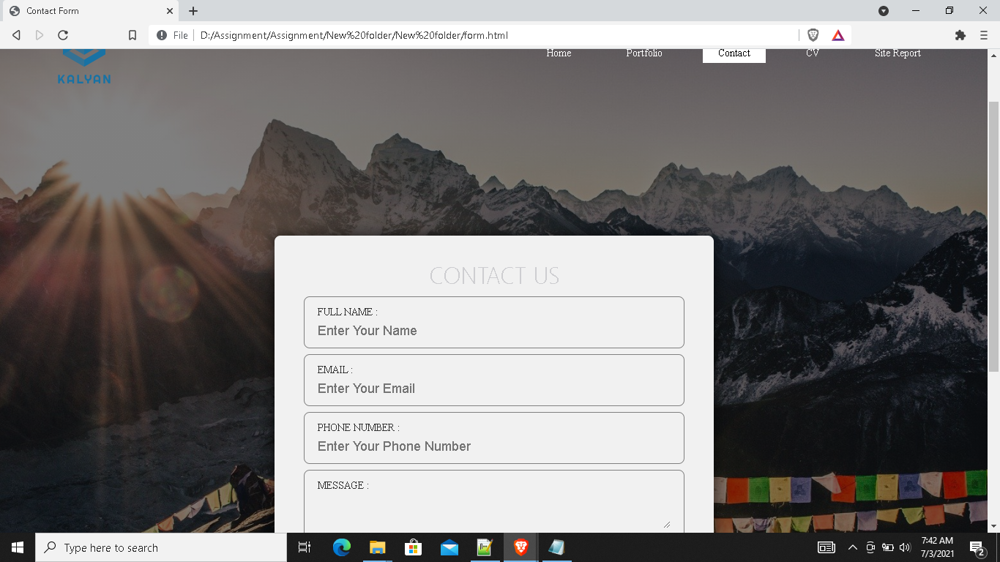

Within the past few years I had developed a huge interest in coding, video/photo editing and techs related stuffs. So I had decided to pursue my career in this specific field, though I have enough knowledge about editing, coding was a new subject for me I only had basic knowledge about it. Talking about the assignment at first it was bit confusing because this was new for me, I had lots of confusions in my head but our teacher helped me with it.
As you are aware that due to lockdown online classes was running down so we had problems because of it. After the assignments were handed to us and after my most of the doubts were cleared I started my assignment with the index page. I wanted my web page to be attractive so I added a background image in my index page and used different fonts.
So first I tried using this background image
.png) But it didnt looked great so i tried changing background image and made look it a little bit better. So here it is
But it didnt looked great so i tried changing background image and made look it a little bit better. So here it is
.png) After completing my index page I started working on making portfolio. We had fewer things to do here as compared to the other, at first I used the same background image that I used at the first page, as we were assigned to make place holder images I had some issues with it.
So I had to take help from the internet. I placed two place holder images inside a box. So this is what it looked previously
 and this is what it looks like now

After making the portfolio page I started working on making curriculum vitae because I had some doubts on making the contact page. In this page also I used the same background image that I used before. I learned to make logo of my own from the internet which I decided to keep in every page. While making this CV I had very less concern because I had made these types of CV before also, I decided to use the colors which suits the background image and I even kept my own photo at the side bar.

After clearing my doubts on making contact page, I started working on it. I decided to use a different background image in the contact page. Among all other pages this was very difficult for me. As I started working on it I faced many issues but I was able to complete it with help of my friends, teachers and internet too.
so here is what my contact page looks like
 it sticked to the bottom of my site so i removed position and it was fixed to one place.
now this is what it looks like
After completing my index page I started working on making portfolio. We had fewer things to do here as compared to the other, at first I used the same background image that I used at the first page, as we were assigned to make place holder images I had some issues with it.
So I had to take help from the internet. I placed two place holder images inside a box. So this is what it looked previously
 and this is what it looks like now

After making the portfolio page I started working on making curriculum vitae because I had some doubts on making the contact page. In this page also I used the same background image that I used before. I learned to make logo of my own from the internet which I decided to keep in every page. While making this CV I had very less concern because I had made these types of CV before also, I decided to use the colors which suits the background image and I even kept my own photo at the side bar.

After clearing my doubts on making contact page, I started working on it. I decided to use a different background image in the contact page. Among all other pages this was very difficult for me. As I started working on it I faced many issues but I was able to complete it with help of my friends, teachers and internet too.
so here is what my contact page looks like
 it sticked to the bottom of my site so i removed position and it was fixed to one place.
now this is what it looks like
 In conclusion though there were many ups and downs while doing this assignment overall I had fun time doing this assignment. I would like to take this as an opportunity to learn something new and to be sharp at what I already know. I would like to thank the university for giving me this opportunity and all the module teacher who helped me in completing this in time.
In conclusion though there were many ups and downs while doing this assignment overall I had fun time doing this assignment. I would like to take this as an opportunity to learn something new and to be sharp at what I already know. I would like to thank the university for giving me this opportunity and all the module teacher who helped me in completing this in time.